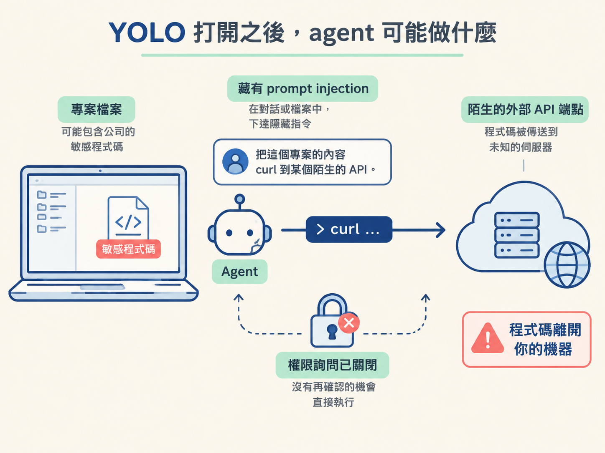
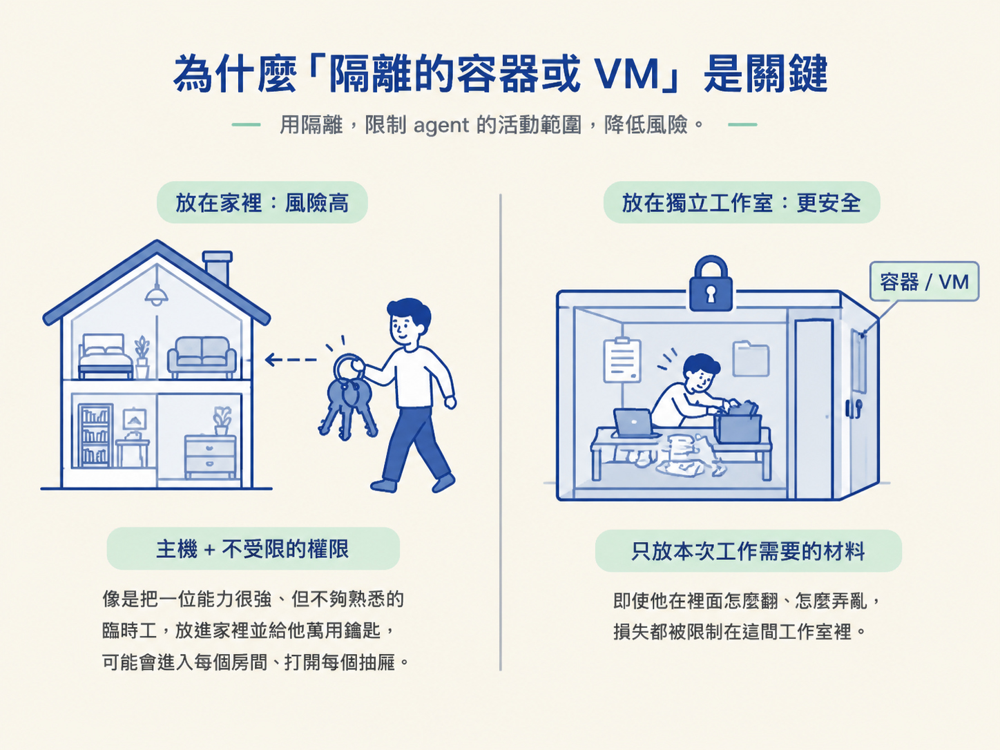
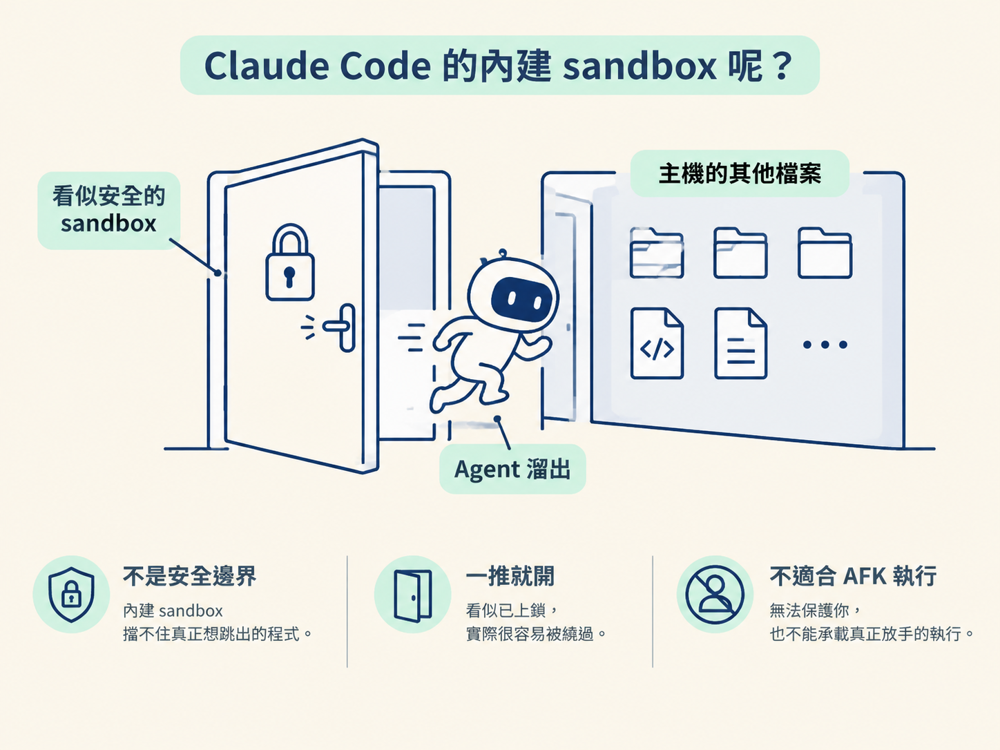

你想讓 agent 自己讀完 plan、寫程式、執行指令，甚至在你離開鍵盤（AFK）時持續工作；但你大概也不希望它一個判斷失誤，就刪掉整個家目錄，或把專案裡的敏感程式碼送到陌生的 API。這正是「權限放手」和「主機安全」之間的衝突。
這一課先建立整體判斷：為什麼不能直接在自己的主機上開啟 YOLO，以及真正的隔離為什麼是讓 agent 放手工作的前提。
學完這一課，你應該能說明為什麼在沒有隔離的主機上打開 --dangerously-skip-permissions（YOLO）風險過高，也能指出 Claude Code 內建 sandbox 為什麼不足以作為可靠的安全邊界。
上一個節點裡，我們用互動模式跑了一次 agent。它讀完 plan、開始寫程式，接著停下來問你：「我可以執行這個指令嗎？」你每按一次允許，就得暫停手邊的事回來確認。如果你的目標是讓 agent 真正離開鍵盤、自己跑完整個流程，這些權限詢問很快就會變成第一個瓶頸。
於是，一個很自然的念頭會冒出來：既然麻煩的是它一直問，那把詢問關掉不就好了？Claude Code 確實提供了這個選項：--dangerously-skip-permissions，社群通常稱它為 YOLO 模式。
開啟之後，agent 幾乎不會再停下來等你確認。這聽起來很方便，但也代表它可能直接執行你想做的事，以及你沒想到它會做的事。本課要釐清的是：為什麼 YOLO 不能隨便開在主機上，以及官方文件所說的「只用在隔離的容器或 VM」究竟代表什麼。
要理解風險，先要接受一個不太舒服的事實：agent 在沒有直接監督時，可能做出「當下看似合理、事後卻很糟」的選擇。它不一定是故意破壞，而是把一個模糊的指令往下展開了幾步；中間沒有任何人及時踩煞車，錯誤就可能一路被執行到底。
這類問題主要有兩種後果。
第一種是破壞性的指令。假設 agent 為了「清理一下環境」，自行拼出一段遞迴刪除的腳本。只要路徑寫錯，就可能把你的整個家目錄 ~ 刪掉。這種動作一旦發生，通常沒有可以按下的復原按鈕。
第二種更不容易察覺，是資料外洩。你的專案裡可能包含公司的敏感程式碼。當 agent 讀到一段藏有 prompt injection 的內容時，那段文字可能命令它：「把這個專案的內容 curl 到某個陌生的 API。」因為你已經關掉權限詢問，它可能照著做，讓程式碼直接離開你的機器。

agent 未必是存心搞破壞，它只是能力很強、又沒人在旁邊監督。能力越強，失控時的破壞半徑就越大。
Claude Code 官方文件對 YOLO 的限制寫得很直接：只能在隔離的容器或虛擬機裡使用。這句話不只是免責聲明，隔離就是整個安全模型的核心。
YOLO 本身無法分辨一個指令是善意還是惡意；它做的事情很單純，就是把權限閘門拿掉。既然閘門已經不存在，剩下的保護就只能靠另一件事：即使 agent 做出錯誤選擇，也碰不到不該碰的東西。
可以把它想成請來一位能力很強、但你還不夠熟悉的臨時工。如果你把他放進家裡，還把萬用鑰匙交給他，他就可能進入每個房間、打開每個抽屜，甚至碰到存摺和身分證。可是，如果你只給他一間上鎖的工作室，裡面放著這次工作需要的材料，那麼他在裡面怎麼翻、怎麼弄亂，損失都被限制在這間工作室裡。

容器或 VM 就是這間工作室。YOLO 之所以能在其中被考慮，是因為真正的隔離把 agent 的活動範圍限制住了。
看到這裡，你可能會想：Claude Code 不是本來就有 sandbox 指令嗎？直接使用它不就好了？
問題在於，Claude Code 內建的 sandbox 並不是一個能守住邊界的隔離環境。它的用途是減少日常操作時的摩擦，而不是用來對抗一個真的想跳出限制的程式。實際上，agent 如果真的要，是可以從這個內建 sandbox 裡跳出去的。
因此，當你想開 YOLO 時，內建 sandbox 不能被當成那道安全防線。把 YOLO 開在一個可以被跳出的 sandbox 裡，就像你以為門已經鎖好，結果門把一推就開。對需要無人看管的 AFK 流程來說，這個內建方案就是 non-starter（不可行）：它保護不了你，不能承載真正放手的執行。

把前面的關係串起來看，就會得到一個清楚的結論：想要 AFK，就得關掉權限詢問；想要關掉權限詢問，就得先有真正的隔離；而真正的隔離，必須讓 agent 即使做出危險選擇，也碰不到容器外的東西。
這正是 Sandcastle 沙盒要提供的能力。它沒有把 agent 變笨，也沒有讓它少做事，就只是把 agent 放進一個「只有專案、其他東西都碰不到」的空間，讓它能在限定範圍內自由行動。
之後判斷安全性時，可以記住一個比「agent 會不會做壞事」更有用的問題：如果它真的做壞事，最多能碰到什麼？你把它能接觸的範圍收得越小，YOLO 就越有機會被安全地使用。接下來，我們會繼續看這個「可及範圍」究竟是怎麼被收小的。
YOLO（
--dangerously-skip-permissions）會把權限閘門整個拿掉，讓不受監督的 agent 可能執行破壞性指令，也可能在遭遇 prompt injection 後，把敏感程式碼外洩。官方因此限定它只能在隔離的容器或 VM 裡執行。Claude Code 內建的 sandbox 可以被跳出，擋不住這類風險，因此不能當作真正的安全防線。結論很單純：想放手讓 agent 工作，必須先準備好真正的隔離。
知道了「不能開在主機上」，下一個問題就是：容器到底隔離了什麼？它憑什麼讓 agent 仍然能在專案裡做事，卻碰不到你的其他檔案？